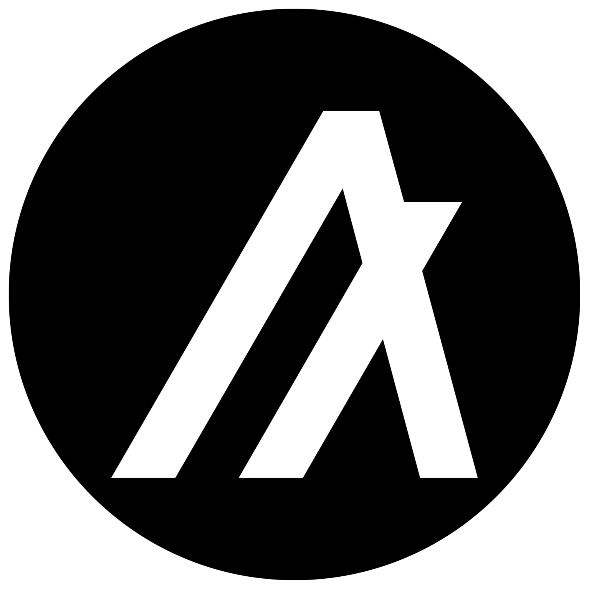
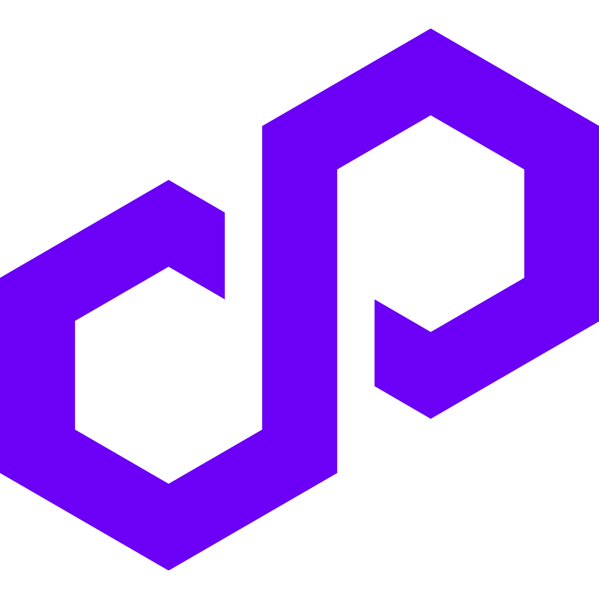

Before 2026
Earlier work
Product marketing for Web3 protocols, and my years in infrastructure before that. Pages that no longer exist link to a web.archive.org copy.
Show earlier work
Web3 talks
ETH Denver 2025: Aggregating Web3
Polygon's aggregation story on the ETHDenver stage.
Watch ↗EthCC 2024: Beyond monolithic and modular
How monolithic and modular chains meet through aggregation, for Polygon Labs.
Watch ↗Permissionless
Speaker at Blockworks' Permissionless conference.
See speakers ↗Also at community events including
Web3 videos
Ethereum's Beam Chain Explainer
Polygon Labs · 20 Nov 2024Understanding Pessimistic Proofs: Enhancing Cross-Chain Security
Polygon Labs · 11 Jun 2024The Hitchhiker's Guide to Chainlink Proof of Reserve
Chainlink Labs · Tech Talk #14 · 2 Dec 2022Quesadillas & Beer with Chainlink
Chainlink Labs · en Español · 29 Jun 2022Web3 writing

Algorand Foundation
Web3x402 Ideathon Berlin: Web3 builders exploring agentic commerce
17 Mar 2026. What builders made with agent payments at the Berlin ideathon.
↗x402: Unlocking the agentic commerce era
12 Feb 2026. The launch post for x402 on Algorand.
↗2025 on Algorand: what's in it for you as a developer
19 Dec 2025. The developer changes of the year in one place.
↗Algorand goes peer-to-peer
9 Dec 2025. Why the network moved to peer-to-peer networking and what changes for node runners.
↗Algorand speaks native P2P: now in NodeKit and Func
9 Dec 2025. How to turn on peer-to-peer mode in the node tools.
↗Algorand hackathons 2025
3 Dec 2025. A year of hackathons, the winners and what they built.
↗How to use Liquid Auth and Pera Wallet for passwordless sign-in
12 Nov 2025. A step by step guide to signing in with a wallet.
↗Introducing Liquid Auth in Pera
12 Nov 2025. The launch post for passwordless sign-in in Pera Wallet.
↗LinkedIn Articles
Personal
Polygon Labs
Web3Your guide to AggLayer events at ETHDenver
Feb 2025, archived copy. Where to find the AggLayer sessions during ETHDenver week.
↗Open source: Polygon Plonky3 is once again the fastest ZK proving system
12 Dec 2024. The benchmark results behind the Plonky3 claim.
↗Ethereum Beam Chain FAQ
Nov 2024, archived copy. Questions and answers on the Beam Chain proposal from Devcon.
↗Upgrade every EVM chain to ZK: introducing the Type 1 Prover
8 Feb 2024. The launch post for the Type 1 Prover.
↗
Parity / Polkadot
Web3
Chainlink Labs
Web3Stablecoins and Proof of Reserve
7 Mar 2023. How Proof of Reserve checks what backs a stablecoin.
↗Verify stablecoin collateral with Chainlink Proof of Reserve
2022, archived copy. A walkthrough for teams issuing stablecoins.
↗Verify Bitcoin collateral with Chainlink Proof of Reserve
2022, archived copy. The same check for wrapped Bitcoin.
↗Using Chainlink Proof of Reserve to unlock cross-chain liquidity
22 Feb 2022. Proof of Reserve for assets that move between chains.
↗Case studies
Product marketing work
Strategos
2025. A blockchain strategy game I built on Algorand while I was marketing it to developers. Code on github.com/vestival/strategos.
↗Proof of Reserve
2022. Interactive animations and landing page for Chainlink's Proof of Reserve product.
↗Chainlink Tech Talks
2022. Scripts and outlines for most of the Tech Talks video series, now listed with the Chainlink webinars.
↗Chainlink VRF interactive demo
2022. A self-serve product demo built with Storylane for SmartCon 2022.
↗Cerbos Developer Page
2021. Developer-focused landing page for the Cerbos authorization platform.
↗Infrastructure writing and labs, before Web3
The future of pharma depends on the cloud and secure data
2021, archived copy. Cloud and data security for pharmaceutical companies.
↗The right kind of transformation is vital for energy sector survival
2021, archived copy. Infrastructure modernization for energy companies.
↗Hands-on Labs
2018. CloudForms and Ansible lab guide for Red Hat Tech Exchange.
↗My First Ansible Control Action
Sep 2016. Running an Ansible playbook from a ManageIQ policy, step by step.
↗